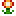
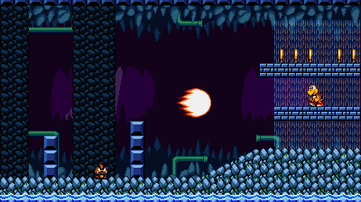
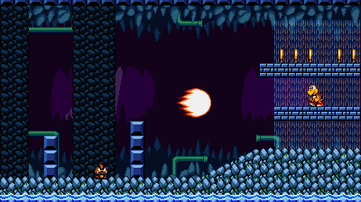

Characters
Main Cast
Sonic
He's the world's most famous hedgehog: Sonic's known for running faster than the speed of sound, and he's always there to help anyone in need. For years, he's been saving the world from the evil Dr. Eggman.
Info
- Origin: Sonic the Hedgehog (1991)
- Creator: SEGA / Sonic Team
- Special Transformation: Super Sonic
- Transformation Requirement: 7 Chaos Emeralds + 50+ Rings
- Unique Trait: Runs on water at high speeds
Moveset
- + - Spin Dash
- (mid-air) - Instashield
- (mid-air) - Air Dash
- () - Sonic Boom
- (mid-air+bubble) - Bounce
- (mid-air+spark) - Spark Jump
 


Tails
- Origin: Sonic the Hedgehog 2 (1992)
- Creator: SEGA / Sonic Team
- Special Transformation: Super Tails
- Transformation Requirement: 7 Chaos Emeralds + 50+ Rings
Knuckles
- Origin: Sonic the Hedgehog 3 & Knuckles (1994)
- Creator: SEGA / Sonic Team
- Special Transformation: Super Knuckles
- Transformation Requirement: 7 Chaos Emeralds + 50+ Rings
- Unique Trait: Can break cracked ground
Amy Rose
- Origin: Sonic CD (1993)
- Creator: SEGA / Sonic Team
- Special Transformation: Super Amy
- Transformation
- Requirement: 7 Chaos Emeralds + 50+ Rings
Mario
- Origin: Donkey Kong (1981)
- Creator: Nintendo
Luigi
- Origin: Mario Bros. (1983)
- Creator: Nintendo
Peach
- Origin: Super Mario Bros. (1985)
- Creator: Nintendo
- Special Transformation: Emotions (Anger, Joy, Sadness and Fear)
- Transformation Requirement: Uses power-ups to transform
- Unique Trait: Uses a 3 Heart life system and has no small form
Toad
- Origin: Super Mario Bros. (1985)
- Creator: Nintendo
Wario
- Origin: Super Mario Land 2 (1992)
- Creator: Nintendo
- Unique Trait: Can break cracked ground
Waluigi
- Origin: Mario Tennis (2000)
- Creator: Nintendo / Camelot
Shantae
- Origin: Shantae
- Creator: WayForward
- Special Transformations: Elephant, Monkey, Crab, and Harpy forms
- Transformation Requirement: Press Z while not transformed
- Unique Trait: Uses magic spells and transformations instead of regular power-ups
T-Rex
- Origin: Google Chrome
- Creator: Google
- Unique Trait: Can't stop in place (running all the time, unless he can't move)
Lilac

- Origin: Freedom Planet
- Creator: GalaxyTrail
- Unique Trait: Uses power-ups to restore energy and has a health bar
Quote
- Origin: Cave Story
- Creator: Studio Pixel
- Unique Trait: Uses weapons instead of power-ups
Kirby
- Origin: Kirby's Adventure
- Creator: Nintendo / HAL Laboratory
- Special Transformation: Ability Transformations
- Transformation Requirement: Inhaling objects
- Unique Trait: Inhaling and Transformations
Other characters to be added...